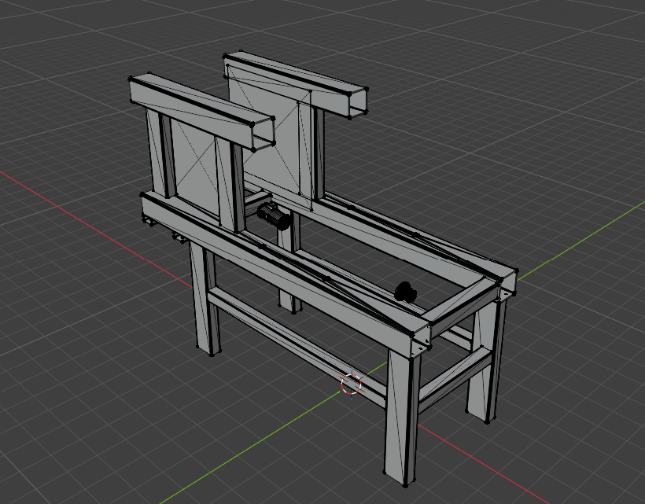

Про мене
- ПІБ: Мудрий Ярослав
- Група: ІН-43-5
- Мій унікальний колір-акцент: #7C4DFF
- Улюблений інструмент розробника: DevTools
- Fun fact: Я люблю працювати з вебтехнологіями та тестувати власні ідеї під час розробки сайтів.
Мій перший компонент UI
Цей компонент стилізовано моїм індивідуальним кольором-акцентом
і містить унікальний ідентифікатор сторінки, який генерується
у файлі main.js під час завантаження сторінки.
Чекліст для перевірки
- Документ має індивідуальний title із моїми ПІБ і групою.
-
Задано персональний колір-акцент
(CSS змінна
--accent). - Виводиться унікальний ідентифікатор сторінки, який генерується у JavaScript.
- На сторінці є мій аватар.
- У консолі браузера є персональне вітання.